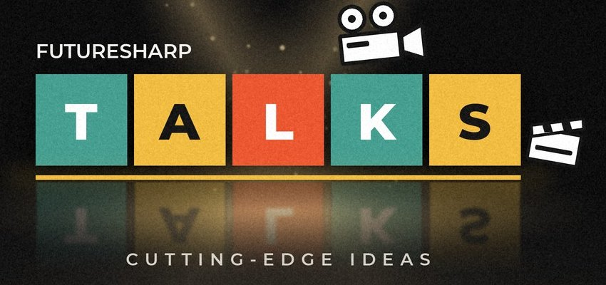

Welkom by Future Shop
Boeke, video's en kursusse vol nuwe idees.
Kom kyk gerus rondOns het dalk iets waarby jy kan baatvind.

FutureSharp Talks
Kort praatjies van sowat 15 minute deur kundiges. Kyk wanneer dit jou pas, in jou eie Teater.
Kyk na die praatjies